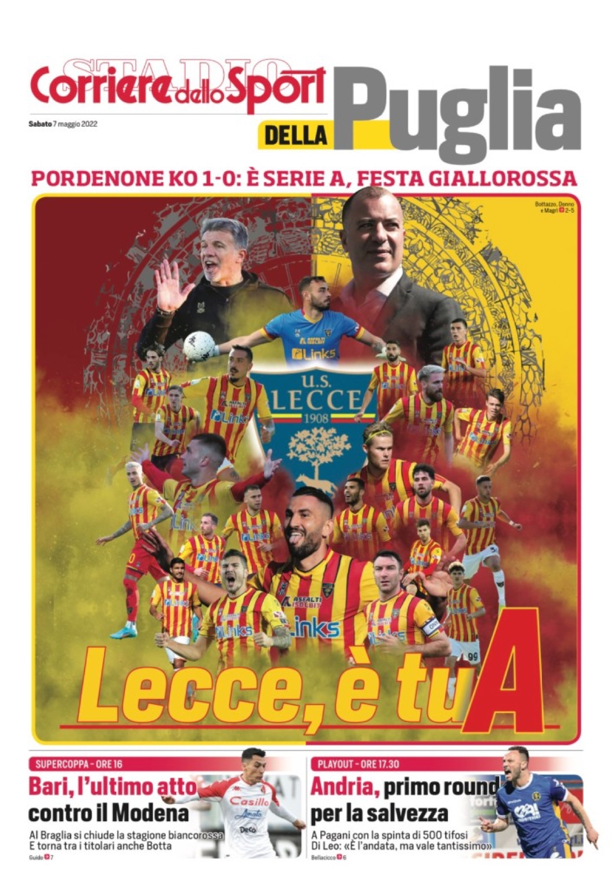
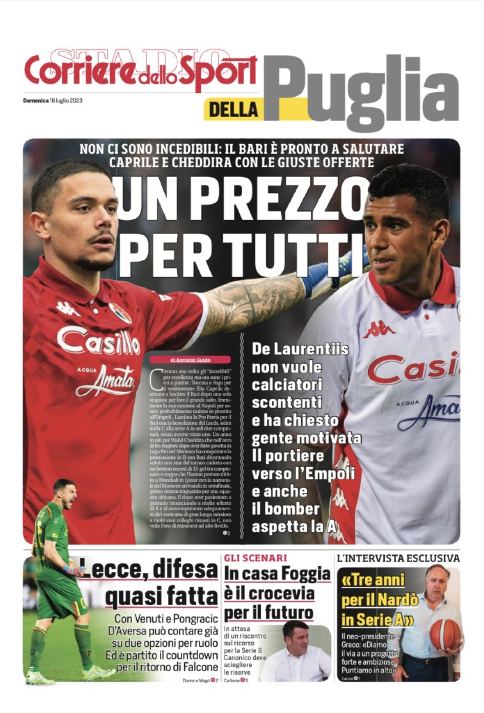
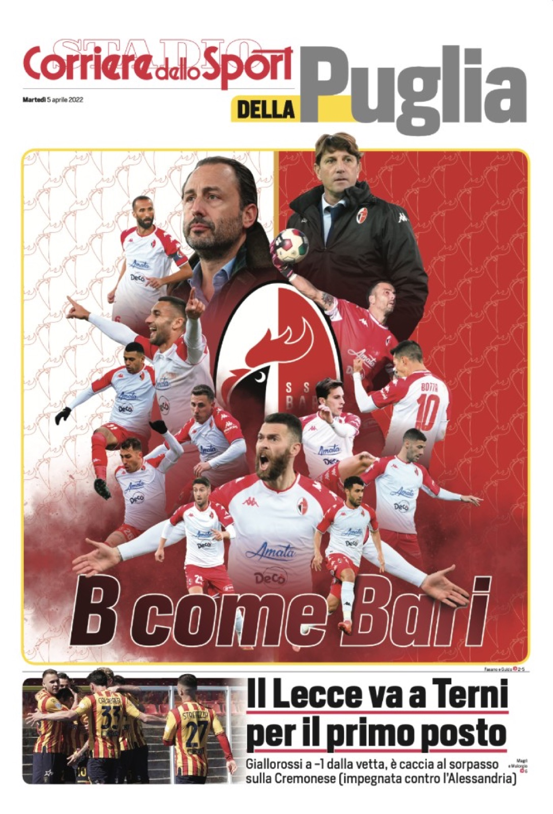
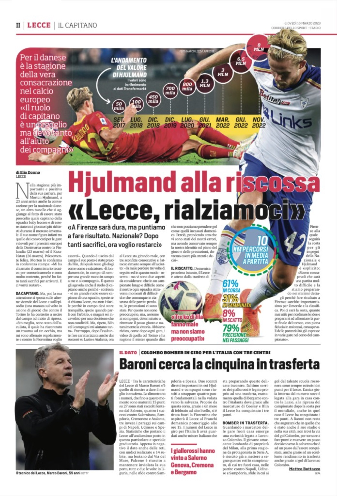
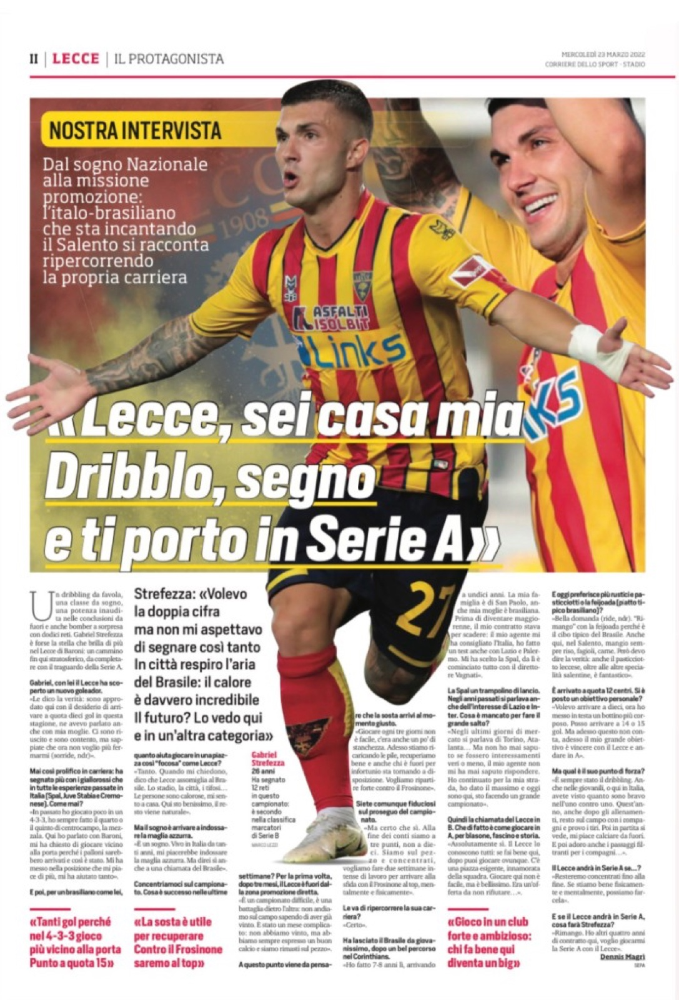
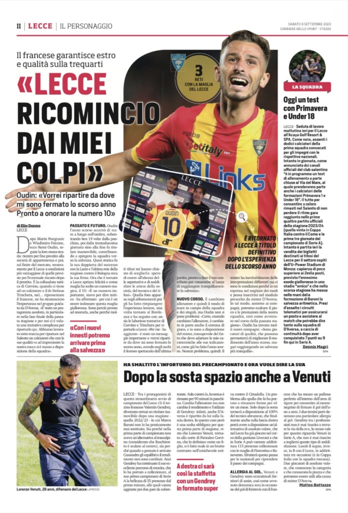
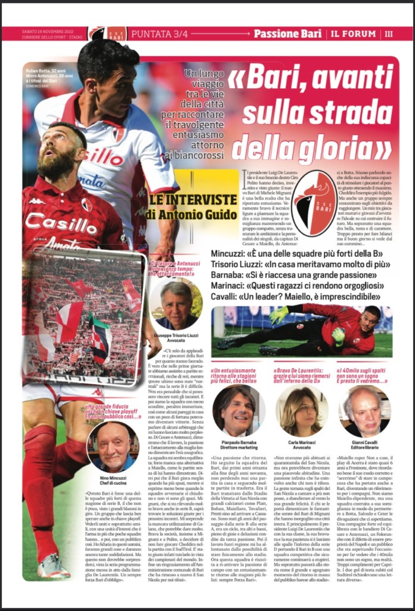
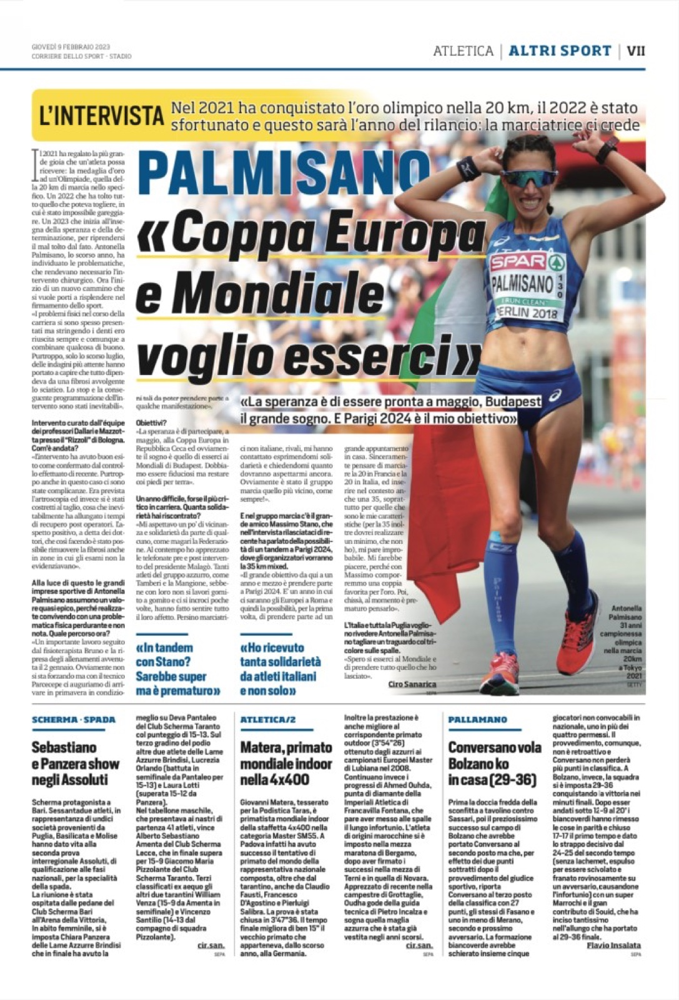
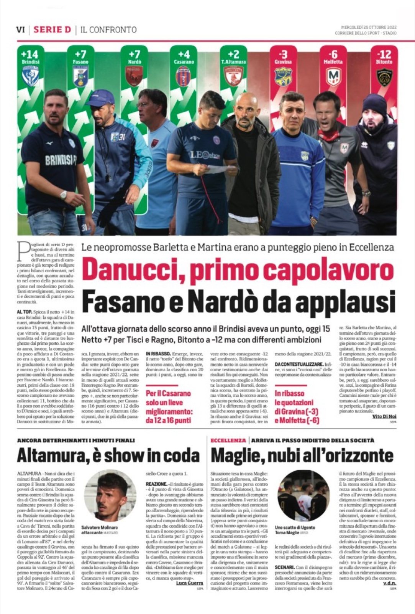
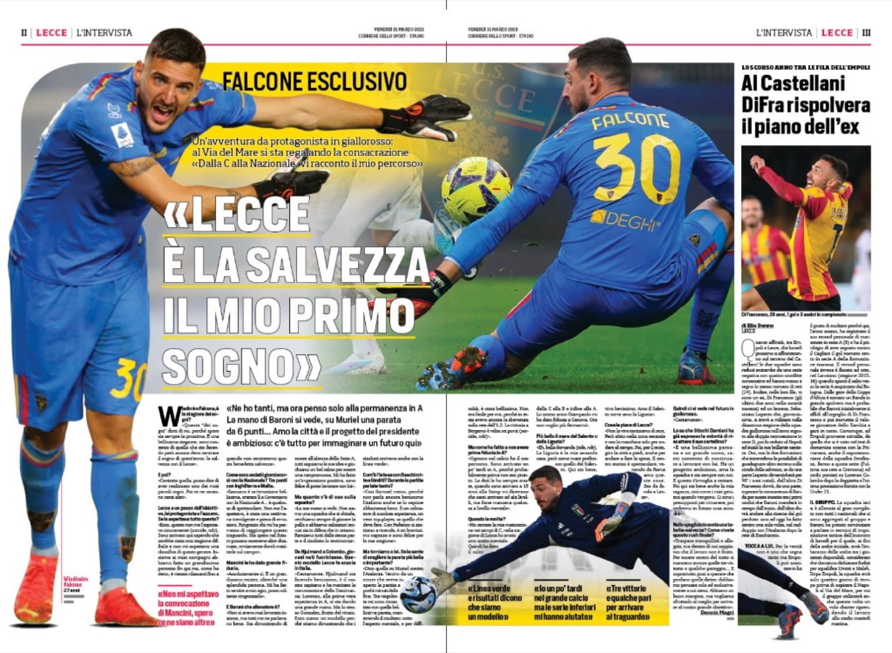

Corriere dello Sport.
Cliente
Corriere dello Sport — Stadio
Settore
Editoriale · Sport
Ruolo
Head of Graphics
Periodo
Mag 2020 — present
Overview
Il Corriere dello Sport — Stadio è uno dei tre grandi quotidiani sportivi nazionali italiani, insieme a Tuttosport e Gazzetta dello Sport. Fondato a Bologna nel 1924, ha attraversato un secolo di sport italiano — dal 1926 al 1943 è stato l'organo ufficiale del CONI, e nel 1977 ha incorporato lo storico quotidiano bolognese Stadio assumendo la denominazione attuale.
Sono Head of Graphics dal maggio 2020. Mi occupo dell'impaginazione del giornale, delle infografiche e delle copertine speciali — il punto di equilibrio tra la routine quotidiana di una redazione e i momenti in cui un singolo numero diventa pezzo da collezione.
Ogni giorno significa lavorare sotto la pressione del deadline editoriale, ma anche difendere uno standard visivo riconoscibile pagina dopo pagina. Quando capita l'evento straordinario — uno scudetto, una finale, un'edizione olimpica — la grafica passa dal supporto al protagonista.
Prime memorabili



Edizioni da Collezione






